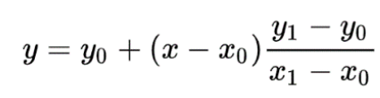
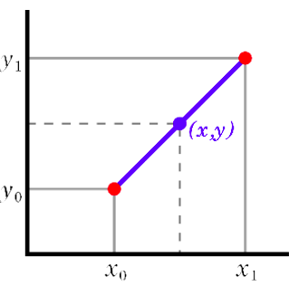

Ingreso y ajuste de datos
Objetivo Permita a los usuarios preparar datos históricos de consumo antes de pasar al 'Extrapolación' pantalla. El consumo real histórico puede ser cantidades vendidas, cantidades entregadas al usuario o cantidades emitidas por las instalaciones de almacenamiento. En esta pantalla, los usuarios pueden ajustar los datos de consumo históricos que se ingresaron manualmente en esta pantalla o que se importaron de un programa de plan de suministro de QAT (si desea importar, vaya primero a la 'Importar desde el plan de suministro QAT' screen).
Usando esta pantalla:
- Seleccione el programa de pronóstico y el período de revisión deseado. De forma predeterminada, QAT preselecciona un rango de fechas de 36 meses antes del inicio del período de pronóstico. Se muestra una tabla no editable y todos los productos relacionados con este programa de previsión, junto con sus datos de consumo ajustados si ha ingresado previamente esos datos; de lo contrario, verá celdas amarillas que indican que no se han ingresado datos de consumo. Por defecto, los productos y el consumo se muestran en unidades de planificación. El usuario también puede expandir cada fila de la tabla para mostrar el consumo por región, si maneja un programa multi-región.
- En la tabla superior, haga clic en un producto para mostrar la tabla de datos detallada de ese producto. La tabla de datos detallada tendrá una sección para cada región de su programa.
- La tabla de datos detallados permite a los usuarios agregar, editar, ajustar o eliminar registros históricos de consumo.
- Si desea ingresar datos manualmente, ingrese el consumo histórico para cada región
y mes en la fila "Consumo real".
- Si ha importado datos de QAT, verá su consumo histórico importado en la fila "Consumo real".
- De manera predeterminada, se supone que los datos se ingresan en la Unidad de
planificación. Sin embargo, el usuario puede especificar la unidad apropiada para los
datos detallados haciendo clic en el enlace cambiar debajo del nombre del producto y
en la ventana emergente posterior, eligiendo ingresar datos usando la unidad de
planificación, las cantidades de la unidad de pronóstico (aplicando un reino -factor de conversión administrado) u otra
unidad ingresada por el usuario (y factor de conversión).
- Hay tres formas de ajustar los datos.:
- Ajustar por subregistro: El valor predeterminado es 100% de informes cada mes. El usuario puede cambiar
esto al valor correcto. QAT calculará el consumo ajustado por subregistro.
- Ajuste por desabastecimiento: Para los datos importados, la cantidad de días sin existencias se extrae del
programa del plan de suministro de QAT, si se recopilan datos. El valor predeterminado para los días de desabastecimiento es
cero días (se supone que el producto siempre está en stock). El usuario puede cambiar
esto al valor correcto. El valor predeterminado para la cantidad de días en un mes se
basa en los días calendario, pero los usuarios pueden ajustar la cantidad de días utilizados
para el cálculo de agotamiento de existencias en 'Actualizar la configuración de la versión'.
Tasa de desabastecimiento = Agotado (días)/ (# de días en el mes).
Consumo ajustado = Consumo real / Tasa de informes / (1 - Tasa de desabastecimiento)
Por ejemplo, si para un mes determinado, un producto tuvo un consumo de 1.000 unidades,
estuvo agotado durante 5 de los 31 días del mes y la tasa de informes fue del 98 %.:
Tasa de desabastecimiento = 5 days stocked out /31 days in a month = 16.1%.
Consumo ajustado = 1,000 units / 98% Reporting / (1 - 16.1%) = 1,217
- Interpolación de valores perdidos: Haga clic en el botón verde "Interpolar" en el centro derecho de
la pantalla para buscar períodos en los que el valor de consumo está en blanco y reemplazarlos con un valor
interpolado. QAT interpola encontrando los valores más cercanos a cada lado
(antes o después del espacio en blanco), calcula la línea recta entre ellos y usa esa
fórmula de línea recta para calcular el valor de los espacios en blanco.
Tenga en cuenta que QAT no interpolará los meses en los que el consumo real sea cero.
QAT solo interpolará si hay al menos un punto de datos antes y un punto de datos después
de los valores en blanco.
Matemáticamente:
- Donde las x representan meses y las y representan el consumo real,
- Donde los valores de datos conocidos son (x0, y0) y (x1, y1)
- Donde los valores de datos desconocidos son (x, y)
- La fórmula para la recta interpolada es


- Use el gráfico debajo de la tabla de datos detallados para ver los datos ajustados
- Haga clic en "Enviar" para guardar los datos ingresados
- Repita los pasos 2 a 4 para cada unidad de planificación
|